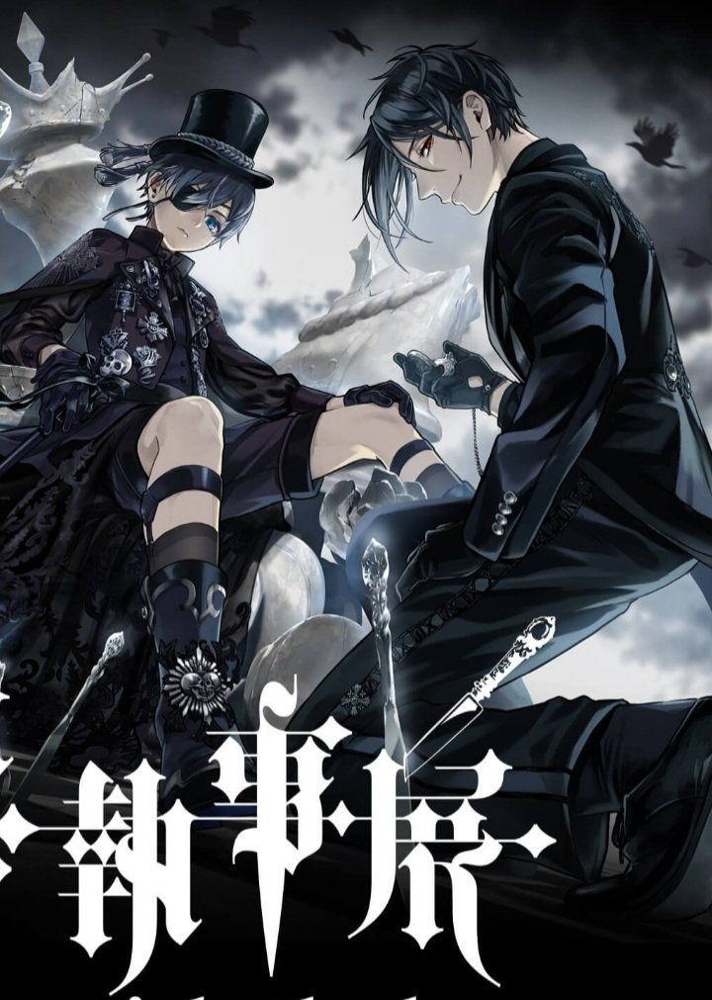

Black Butter
Thể loại: Fantasy, Bí ẩn
Mô tả:
Black Butler là một bộ dark fantasy bí ẩn lịch sử lấy bối cảnh nước Anh thời Victoria. Truyện xoay quanh mối quan hệ đặc biệt giữa một thiếu gia quý tộc và quản gia hoàn hảo nhưng đầy bí ẩn. Tác phẩm nổi bật bởi không khí u ám, phong cách quý tộc cổ điển và những câu chuyện pha trộn giữa trinh thám, siêu nhiên và tâm lý.
Tóm tắt cốt truyện:
Ciel Phantomhive là người đứng đầu gia tộc Phantomhive danh giá dù còn rất trẻ. Cậu làm việc trực tiếp cho Nữ hoàng trong việc điều tra những sự kiện bí ẩn xảy ra trong thế giới ngầm của nước Anh. Luôn bên cạnh Ciel là Sebastian Michaelis, một quản gia có năng lực gần như hoàn hảo và không hề giống con người bình thường. Ẩn sau mối quan hệ chủ – tớ ấy là một khế ước bí mật, ràng buộc cả hai cùng theo đuổi mục tiêu báo thù. Trong quá trình giải quyết các vụ án kỳ lạ, Ciel dần đối diện với quá khứ đau thương của mình, còn Sebastian luôn thực hiện nhiệm vụ với sự trung thành tuyệt đối — nhưng không hoàn toàn vô điều kiện. Black Butler là câu chuyện về báo thù, lòng trung thành và cái giá phải trả cho những mong ước đen tối.
Bình luận
Vui lòng đăng nhập để bình luận.